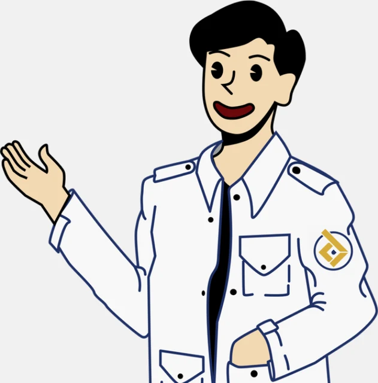
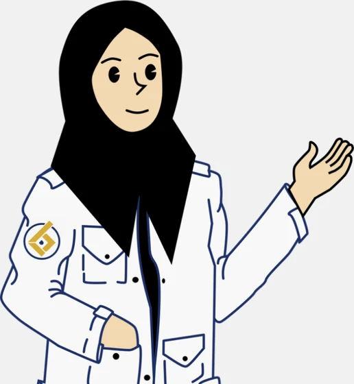

Mini Project: Konverter Suhu
Tempel isi main.py, lalu klik Nilai. Programmu dijalankan di jendela tiruan: Entry diisi, Radiobutton dipilih, dan Button diklik otomatis, lalu hasilnya dinilai per poin. Yang dinilai perilakunya, bukan tampilannya. Semua berjalan di browsermu, kodenya tidak dikirim ke mana pun.

Hasil akan muncul di sini: nilai total dari 100, poin mana yang lolos, dan log setiap skenario uji ("Entry diisi", "Tombol diklik", "Label berubah") supaya kamu bisa melihat di mana programmu salah.

main.py. Buat jendela dengan Tk(), beri title() "Konverter Suhu", atur geometry(), dan akhiri dengan mainloop().StringVar/IntVar bertuliskan Celsius ke Fahrenheit dan Fahrenheit ke Celsius, Button Konversi, dan Label hasil.pack() atau grid(), jangan dicampur dalam satu wadah. Tulis .pack() di baris terpisah dari pembuatan widget.messagebox.showerror (atau showwarning), dan program tidak boleh error.bind("<Return>", ...) dengan fungsi def konversi(event=None).| Poin | Yang dinilai | Bobot |
|---|
Belum ada file. Kalau satu NPM mengumpulkan beberapa kali, nilai yang dipakai adalah yang tertinggi.
CSV berisi NPM, nama, nilai, rincian T1–T7, dan catatan, siap diimpor ke database nilai. "Salin" menyalin tabel dengan pemisah tab, jadi bisa langsung di-paste ke Excel atau Google Sheets.
| Tabel rekap akan terisi setelah kamu memasukkan file zip praktikan. Klik baris mana saja untuk melihat rincian dan transkrip tiap praktikan. |